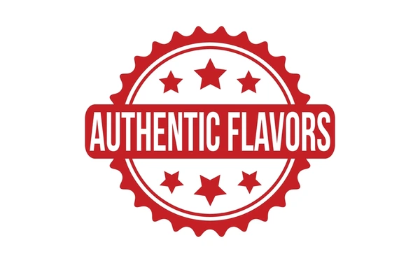
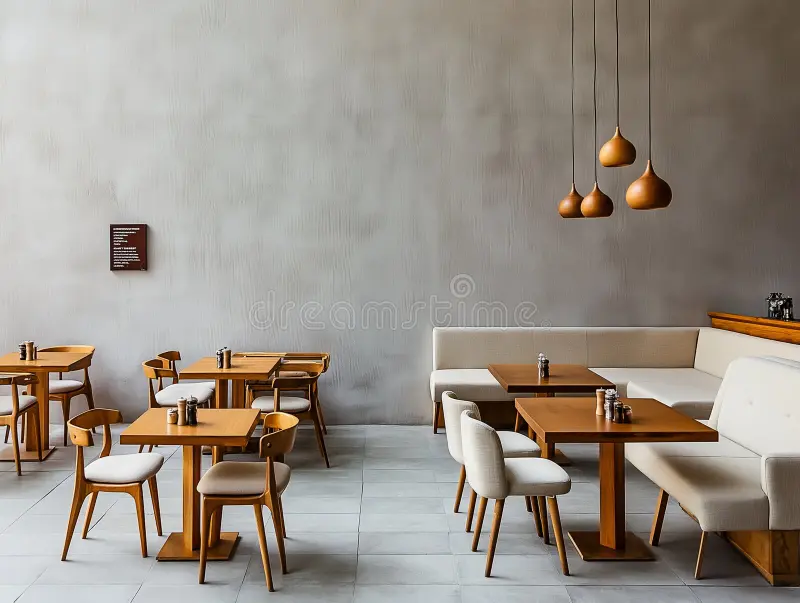

Discover the Heart of Indian Cafes
We are passionate about bringing the warmth, aroma, and comfort of Indian-style cafes to your neighborhood in the USA. From the first sip of chai to the last bite of freshly made samosas, our cafes are handpicked to deliver authenticity and a touch of home, wherever you are.
Explore the cozy corners of our curated cafes, meet people who share your love for vibrant flavors, and find a space to relax, work, or reconnect with friends while enjoying the spirit of India.
What Makes Our Selection Special

Authentic Flavors
We feature cafes that use traditional Indian spices and brewing methods for a truly authentic taste.

Cozy Comfort
Experience a warm, inviting atmosphere perfect for studying, meeting friends, or quiet reflection.
Fresh Ingredients
From samosas to dosas, the cafes we suggest use fresh, quality ingredients in every dish and drink.
Vibes
Find a welcoming space that celebrates Indian culture and creates a home away from home.